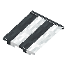

Gray Striped Awning
mcwroofs:gray_striped_awning
英文名: Gray Striped Awning命名空间 ID:
mcwroofs:gray_striped_awning类型: 方块所属模组: Macaw's Roofs资料检索: 🔎 在 MC百科 搜索「Gray Striped Awning」合成获得 (1)
有序合成Macaw's Roofs

原始 JSON
{
"type": "minecraft:crafting_shaped",
"group": "awnings",
"pattern": [
"BAB"
],
"key": {
"B": {
"item": "minecraft:gray_carpet"
},
"A": {
"item": "minecraft:white_carpet"
}
},
"result": {
"count": 1,
"id": "mcwroofs:gray_striped_awning"
}
}